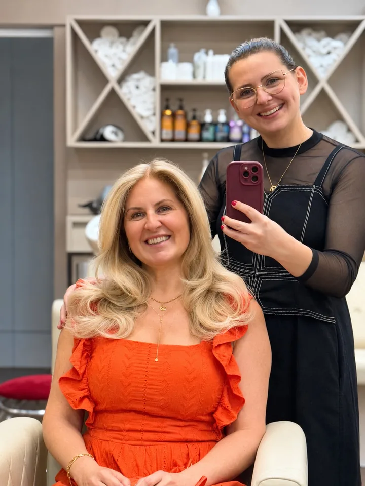
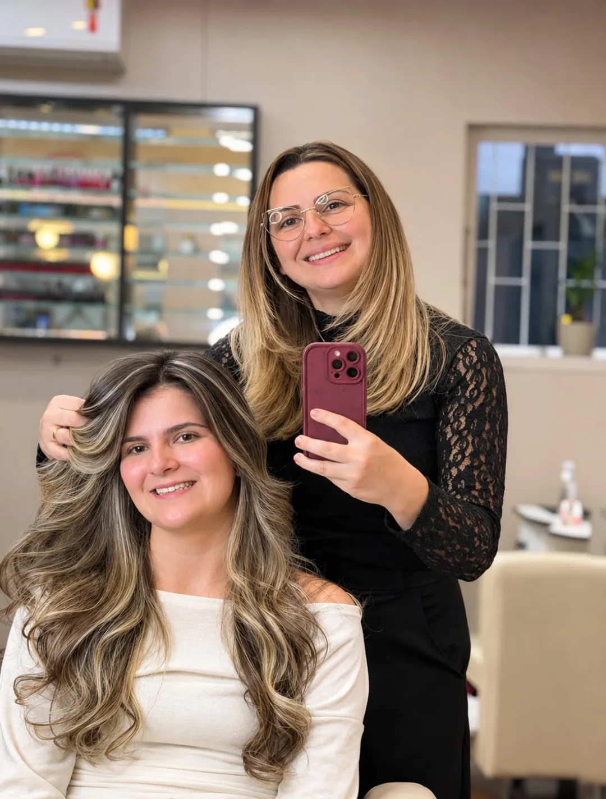
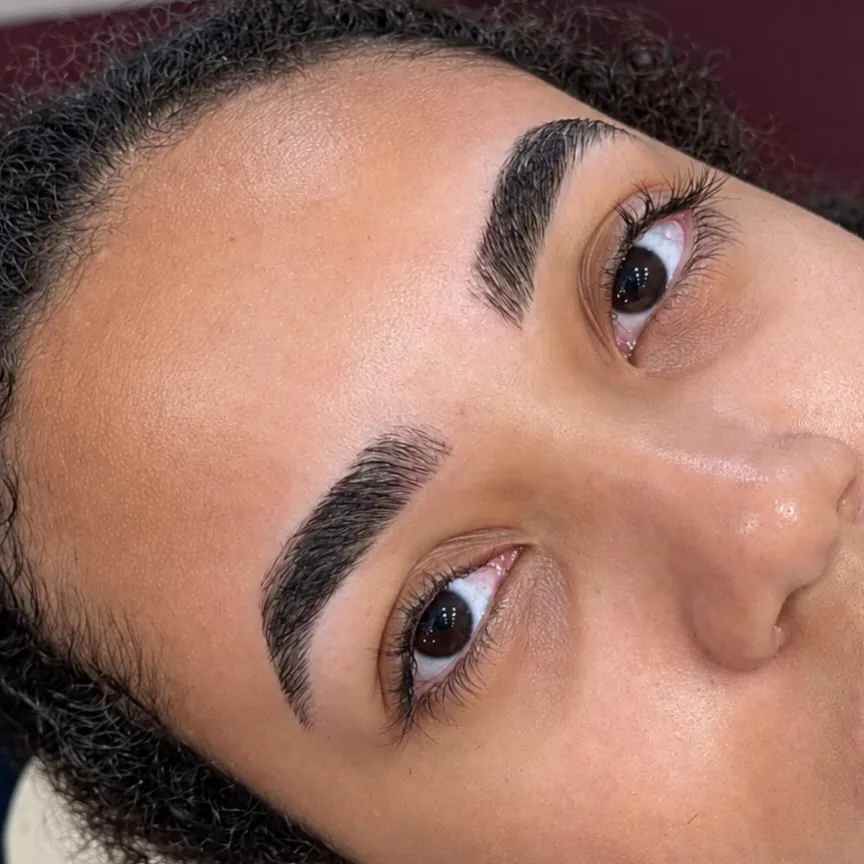
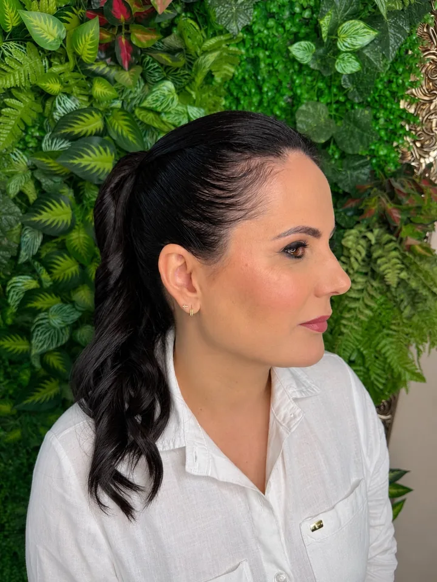
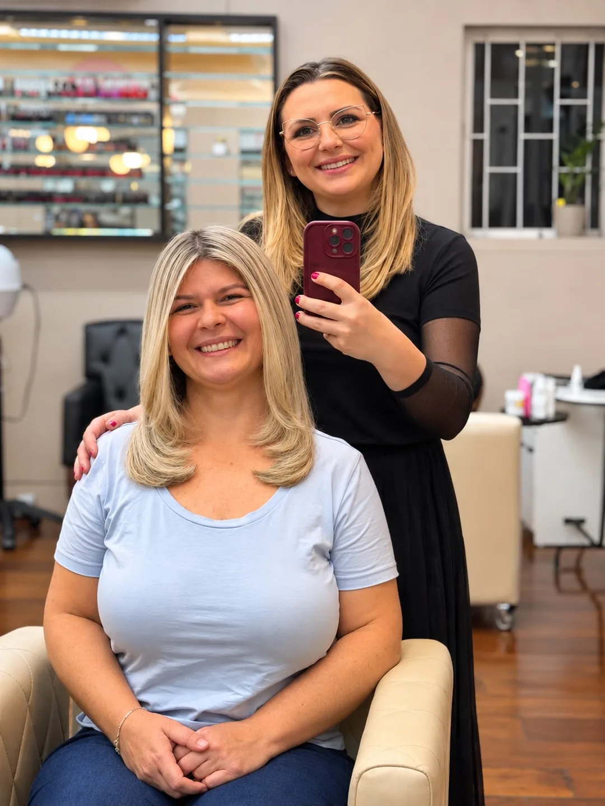

Mechas e loiros
Iluminação na medida certa para realçar a beleza e trazer leveza. Com Marcielle Mattos.
Agendar mechasTubarão · Santa Catarina
Há mais de 20 anos atendendo com excelência. Mechas, penteados, maquiagem e sobrancelhas num só lugar.

O que fazemos


Iluminação na medida certa para realçar a beleza e trazer leveza. Com Marcielle Mattos.
Agendar mechas
Do dia a dia à ocasião especial: penteado feito para a sua festa, o seu evento ou só para sair bem.
Agendar penteadoMake e penteado combinados, para sair do salão pronta. A maquiagem é de Michelle Aguiar.
Agendar makeDesign estratégico: realce no olhar sem perder a naturalidade. Também com Michelle Aguiar.
Agendar sobrancelhas
A casa
“Porque mudar faz bem!”
@marcimattos.hair, em legenda do salão
Horários divulgados no Instagram do salão em novembro de 2026.
Mechas, penteado, maquiagem ou sobrancelhas.
Mande uma mensagem no WhatsApp do salão.
Combine dia e horário e é só chegar.